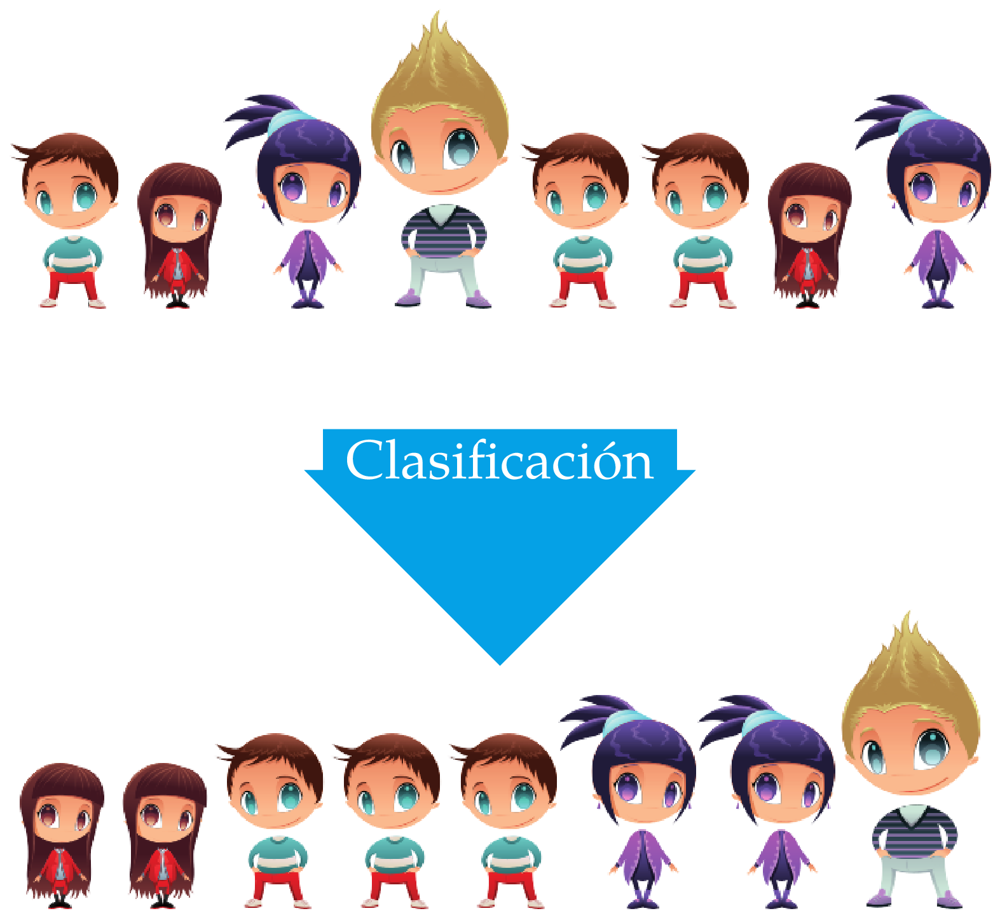
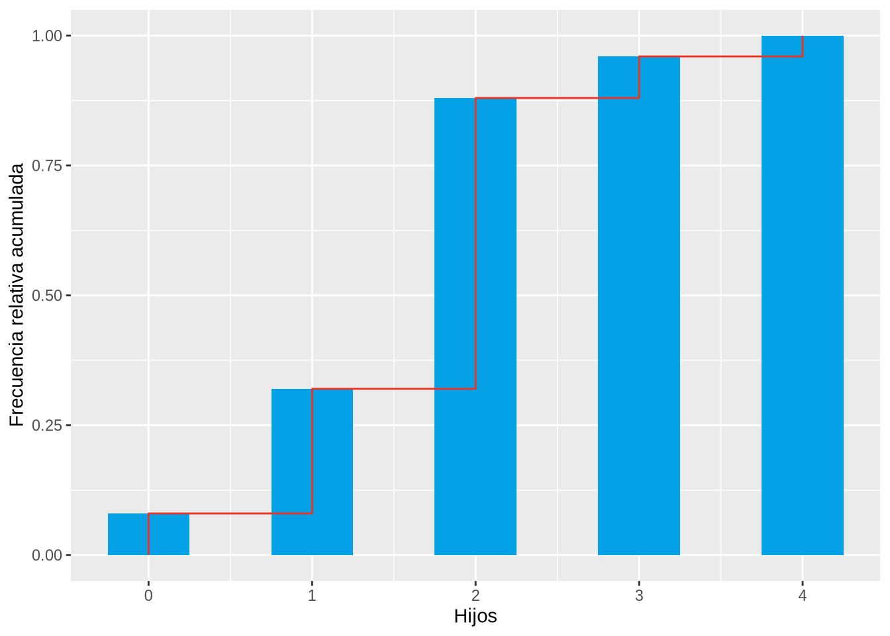
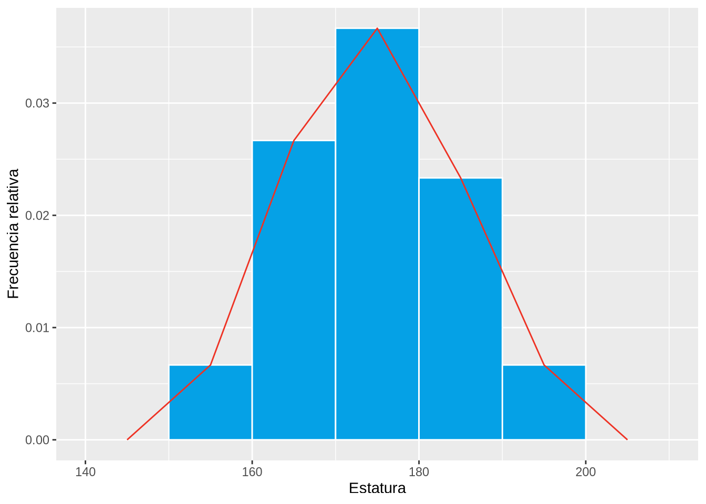
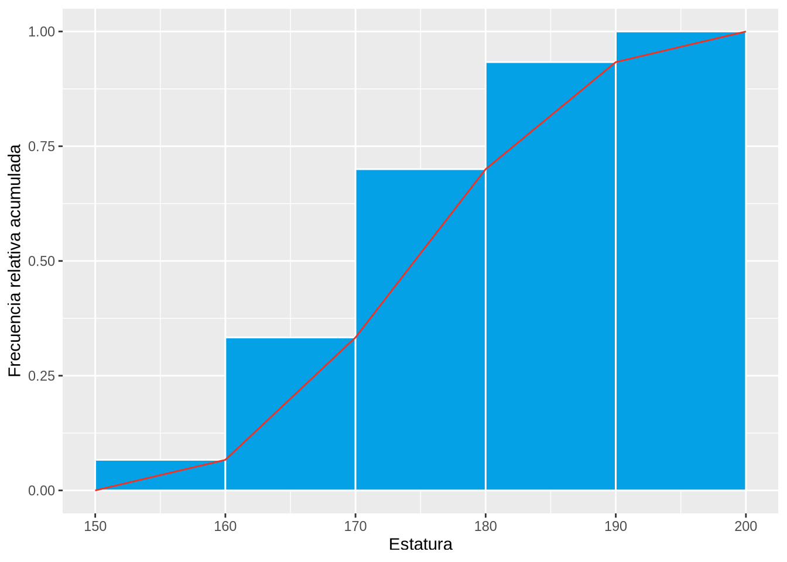
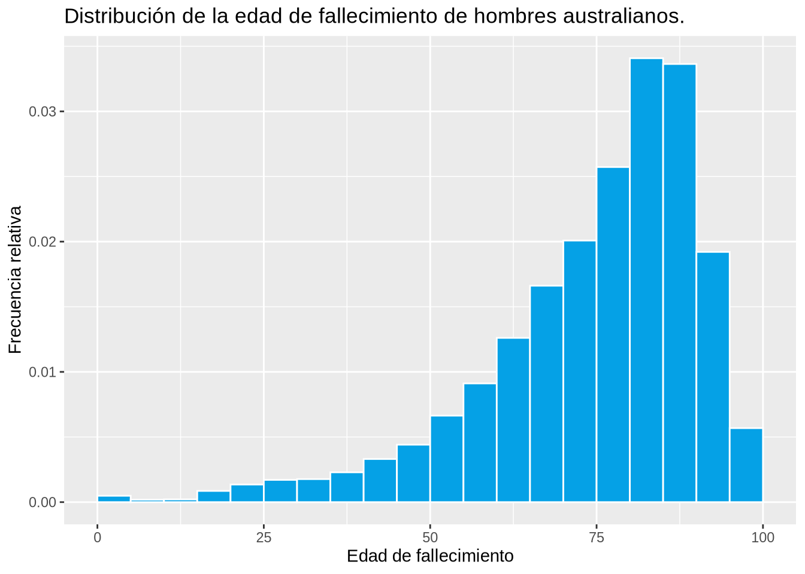
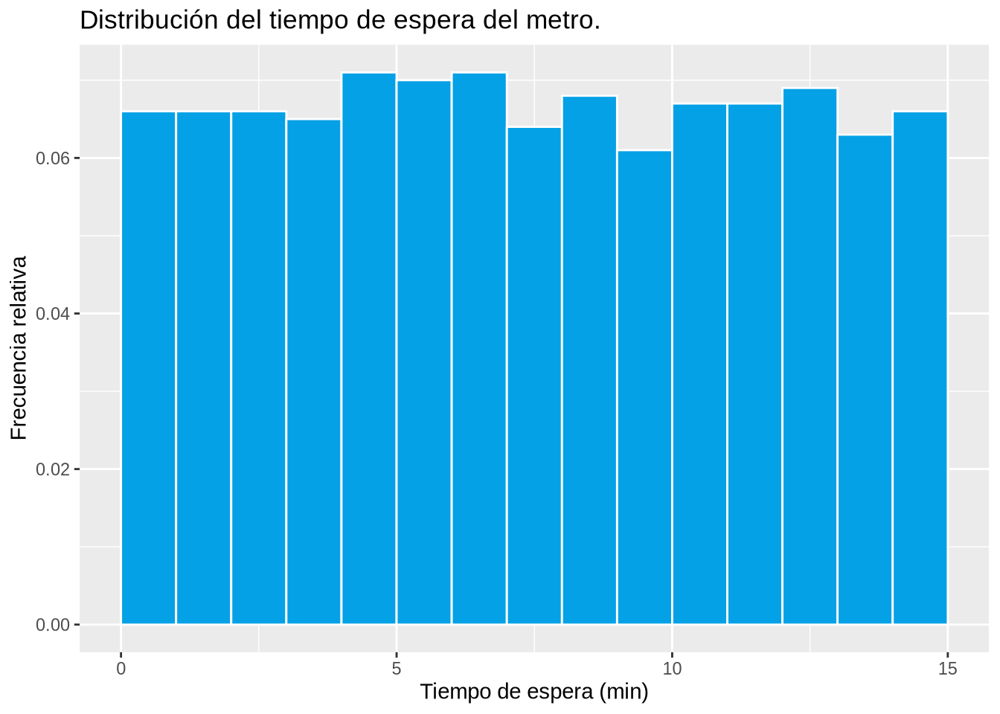
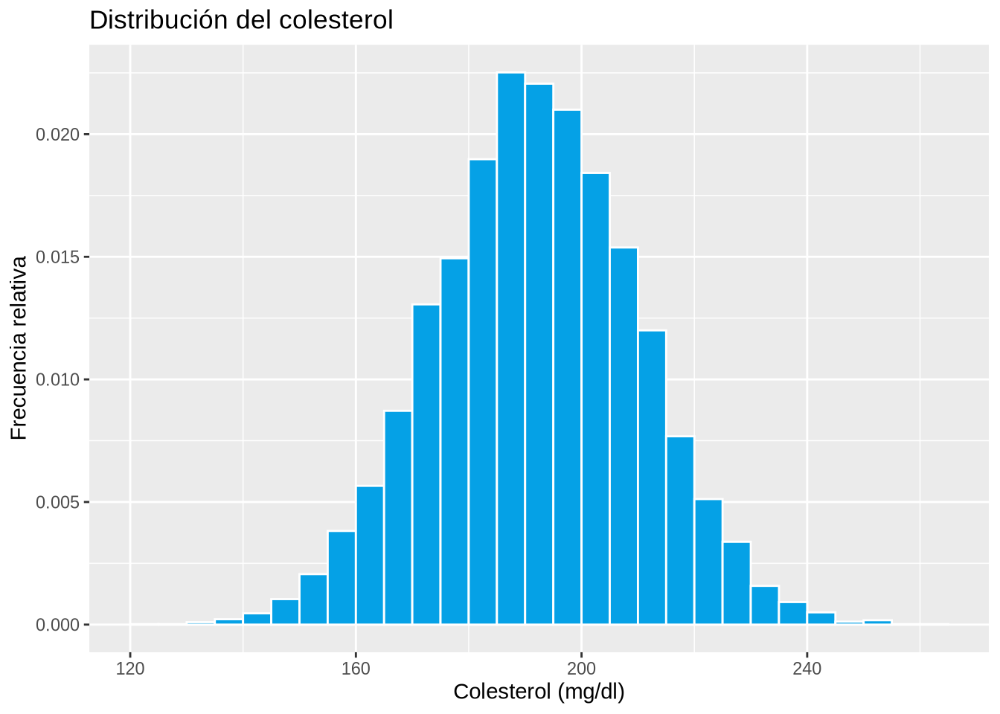
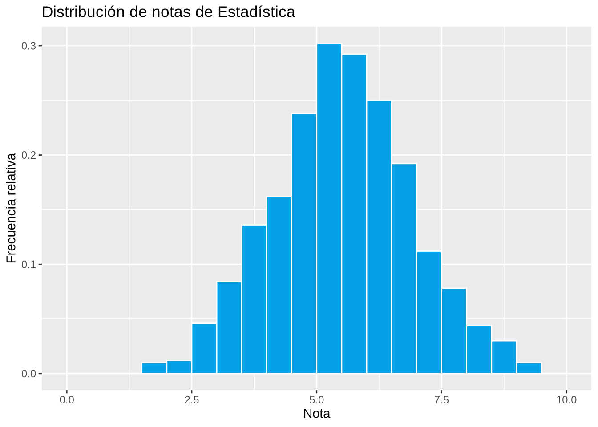

df <- read.csv("datos/hijos-coches.csv")
p <- ggplot(df, aes(x=Hijos)) +
geom_bar(fill=blueceu, width = 0.5) +
ylab("Frecuencia")
p2 Estadística Descriptiva
La estadística descriptiva es la parte de la estadística encargada de representar, analizar y resumir la información contenida en la muestra.
Tras el proceso de muestreo, es la siguiente etapa de todo estudio estadístico y suele consistir en:
Clasificar, agrupar y ordenar los datos de la muestra.
Tabular y representar gráficamente los datos de acuerdo a sus frecuencias.
Calcular medidas que resuman la información que contiene la muestra (estadísticos muestrales).
Interpretación
No tiene poder inferencial, por lo que nunca deben sacarse conclusiones sobre la población a partir de las medidas resumen que aporta la Estadística Descriptiva.
2.1 Distribución de frecuencias
El estudio de una variable estadística comienza por medir la variable en los individuos de la muestra y clasificar los valores obtenidos.
Existen dos formas de clasificar estos valores:
Sin agrupar: Ordenar todos los valores obtenidos en la muestra de menor a mayor. Se utiliza con atributos y variables discretas con pocos valores diferentes.
Agrupados: Agrupar los valores en clases (intervalos) y ordenar dichas clases de menor a mayor. Se utiliza con variables continuas y con variables discretas con muchos valores diferentes.
2.1.1 Clasificación de la muestra
Consiste colocar juntos los valores iguales y ordenarlos si existe un orden entre ellos.

2.1.2 Recuento de frecuencias
2.2 Frecuencias muestrales
Definición 2.1 (Frecuencias muestrales) Dada una muestra de tamaño \(n\) de una variable \(X\), para cada valor de la variable \(x_i\) observado en la muestra, se define
- Frecuencia Absoluta \(n_i\): Es el número de veces que el valor \(x_i\) aparece en la muestra.
- Frecuencia Relativa \(f_i\): Es la proporción de veces que el valor \(x_i\) aparece en la muestra. \[f_i = \frac{n_i}{n}\]
- Frecuencia Absoluta Acumulada \(N_i\): Es el número de valores en la muestra menores o iguales que \(x_i\). \[N_i = n_1 + \cdots + n_i = N_{i-1}+n_i\]
- Frecuencia Relativa Acumulada \(F_i\): Es la proporción de valores en la muestra menores o iguales que \(x_i\). \[F_i = \frac{N_i}{n}\]
2.2.1 Tabla de frecuencias
Al conjunto de valores observados en la muestra junto a sus respectivas frecuencias se le denomina distribución de frecuencias y suele representarse mediante una tabla de frecuencias.
| Valores de \(X\) | Frecuencia Absoluta | Frecuencia Relativa | Frecuencia Absoluta Acumulada | Frecuencia Relativa Acumulada |
|---|---|---|---|---|
| \(x_1\) | \(n_1\) | \(f_1\) | \(N_1\) | \(F_1\) |
| \(\vdots\) | \(\vdots\) | \(\vdots\) | \(\vdots\) | \(\vdots\) |
| \(x_i\) | \(n_i\) | \(f_i\) | \(N_i\) | \(F_i\) |
| \(\vdots\) | \(\vdots\) | \(\vdots\) | \(\vdots\) | \(\vdots\) |
| \(x_k\) | \(n_k\) | \(f_k\) | \(N_k\) | \(F_k\) |
Ejemplo 2.1 (Variable cuantitativa y datos no agrupados) El número de hijos en 25 familias es:
1, 2, 4, 2, 2, 2, 3, 2, 1, 1, 0, 2, 2, 0, 2, 2, 1, 2, 2, 3, 1, 2, 2, 1, 2
La tabla de frecuencias del número de hijos en esta muestra es
\[ \begin{array}{rrrrr} \hline x_i & n_i & f_i & N_i & F_i\\ \hline 0 & 2 & 0.08 & 2 & 0.08\\ 1 & 6 & 0.24 & 8 & 0.32\\ 2 & 14 & 0.56 & 22 & 0.88\\ 3 & 2 & 0.08 & 24 & 0.96\\ 4 & 1 & 0.04 & 25 & 1 \\ \hline \sum & 25 & 1 \\ \hline \end{array} \]
Ejemplo 2.2 (Variable cuantitativa y datos agrupados) Se ha medido la estatura (en cm) de 30 universitarios obteniendo:
179, 173, 181, 170, 158, 174, 172, 166, 194, 185,
162, 187, 198, 177, 178, 165, 154, 188, 166, 171,
175, 182, 167, 169, 172, 186, 172, 176, 168, 187.
La tabla de frecuencias de la estatura en a esta muestra es
\[ \begin{array}{crrrr} \hline x_i & n_i & f_i & N_i & F_i\\ \hline (150,160] & 2 & 0.07 & 2 & 0.07\\ (160,170] & 8 & 0.27 & 10 & 0.34\\ (170,180] & 11 & 0.36 & 21 & 0.70\\ (180,190] & 7 & 0.23 & 28 & 0.93\\ (190,200] & 2 & 0.07 & 30 & 1 \\ \hline \sum & 30 & 1 \\ \hline \end{array} \]
2.2.2 Construcción de clases
Cada intervalo de agrupación de datos se denomina clase y el centro del intervalo se llama marca de clase.
A la hora de agrupar los datos en clases hay que tener en cuenta lo siguiente:
- El número de intervalos no debe ser muy grande ni muy pequeño. Una regla orientativa es tomar un número de intervalos próximo a \(\sqrt{n}\) o \(\log_2(n)\).
- Los intervalos no deben solaparse y deben cubrir todo el rango de valores. Es indiferente si se abren por la izquierda y se cierran por la derecha o al revés.
- El valor más pequeño debe caer dentro del primer intervalo y el más grande dentro del último.
Ejemplo 2.3 (Variable cualitativa) Los grupos sanguíneos de una muestra de 30 personas son:
A, B, B, A, AB, 0, 0, A, B, B, A, A, A, A, AB, A, A, A, B, 0, B, B, B, A, A, A, 0, A, AB, 0.
La tabla de frecuencias del grupo sanguíneo en esta muestra es
\[ \begin{array}{crr} \hline x_i & n_i & f_i \\ \hline \mbox{0} & 5 & 0.16 \\ \mbox{A} & 14 & 0.47 \\ \mbox{B} & 8 & 0.27 \\ \mbox{AB} & 3 & 0.10 \\ \hline \sum & 30 & 1 \\ \hline \end{array} \]
Advertencia
Obsérvese que en este caso las frecuencias acumuladas no tienen sentido al no existir un orden entre los valores de la variable.
2.3 Representaciones gráficas
La tabla de frecuencias también suele representarse gráficamente. Dependiendo del tipo de variable y de si se han agrupado o no los datos, se utilizan distintos tipos de gráficos:
Diagrama de barras
Histograma
Diagrama de líneas o polígonos.
Diagrama de sectores.
2.3.1 Diagrama de barras
Un diagrama de barras consiste en un conjunto de barras, una para cada valor o categoría de la variable, dibujadas sobre unos ejes cartesianos.
Habitualmente los valores o categorías de la variable se representan en eje \(X\), y las frecuencias en el eje \(Y\). Para cada valor o categoría se dibuja una barra con la altura correspondiente a su frecuencia. La anchura de la barra no es importante pero las barras deben aparecer claramente separadas unas de otras.
Dependiendo del tipo de frecuencia representada en el eje \(Y\) se tienen diferentes tipos de diagramas de barras.
En ocasiones se dibuja un polígono, conocido como polígono de frecuencias, uniendo mediante segmentos los puntos más altos de cada barra.
Ejemplo 2.4 El diagrama de barras que aparece a continuación muestra la distribución de frecuencias absolutas del número de hijos en la muestra anterior.
Y a continuación se muestra el polígono de frecuencias.
p <- p +
geom_freqpoly(bins=5, col=redceu)
pEl diagrama de barras que aparece a continuación muestra la distribución de frecuencias relativas del número de hijos en la muestra anterior.
p <- ggplot(df, aes(x=Hijos)) +
geom_bar(aes(y = ..prop..), fill=blueceu, width = 0.5) +
ylab("Frecuencia Relativa")
pWarning: The dot-dot notation (`..prop..`) was deprecated in ggplot2 3.4.0.
ℹ Please use `after_stat(prop)` instead.El diagrama de barras que aparece a continuación muestra la distribución de frecuencias absolutas acumuladas del número de hijos en la muestra anterior.
p <- ggplot(df, aes(x=Hijos)) +
geom_bar(aes(y = cumsum(..count..)), fill=blueceu, width = 0.5) +
ylab("Frecuencia acumulada")
pY el diagrama de barras que aparece a continuación muestra la distribución de frecuencias relativas acumuladas del número de hijos en la muestra anterior.
p <- ggplot(df, aes(x=Hijos)) +
geom_bar(aes(y = cumsum(..prop..)), fill=blueceu, width = 0.5) +
ylab("Frecuencia relativa acumulada")
pFinalmente, el último diagrama muestra el polígono de frecuencias relativas acumuladas.
df.freq <- count(df, Hijos) %>%
mutate(f = n /sum(n), N = cumsum(n), F = N / sum(n))
x <- unlist(lapply(df.freq$Hijos, rep, 2))
F <- c(0, head(unlist(lapply(df.freq$F, rep, 2)),-1))
df2 <- data.frame(Hijos = x, F = F)
p <- ggplot(df, aes(x=Hijos)) +
geom_bar(aes(y = cumsum(..prop..)), fill=blueceu, width = 0.5) +
geom_line(data = df2, aes(x=Hijos, y=F, group=1), col=redceu) +
ylab("Frecuencia relativa acumulada")
p
2.3.2 Histograma
Un histograma es similar a un diagrama de barras pero para datos agrupados.
Habitualmente las clases o intervalos de agrupación se representan en el eje \(X\), y las frecuencias en el eje \(Y\). Para cada clase se dibuja una barra de altura la correspondiente frecuencia. A diferencia del diagrama de barras, la anchura del la barra coincide con la anchura de las clases y no hay separación entre dos barras consecutivas.

Dependiendo del tipo de frecuencia representada en el eje \(Y\) existen distintos tipos de histogramas.
Al igual que con el diagrama de barras, se puede dibujar un polígono de frecuencias uniendo los puntos centrales más altos de cada barra con segmentos.
Ejemplo 2.5 El siguiente histograma muestra la distribución de frecuencias absolutas de las estaturas.
df <- read.csv("datos/estatura-peso.csv")
p <- ggplot(df, aes(x=Estatura)) +
geom_histogram(breaks = seq(150, 200, 10), col="white", fill=blueceu) +
ylab("Frecuencia")
pEl siguiente histograma muestra la distribución de frecuencias relativas con el polígono de frecuencias.
breaks <- seq(150, 200, 10)
p <- ggplot(df, aes(x=Estatura)) +
geom_histogram(aes(y = ..density..), breaks = breaks, col="white", fill=blueceu) +
geom_freqpoly(aes(y = ..density..), col=redceu, breaks = breaks) +
ylab("Frecuencia relativa")
p
El polígono de frecuencias acumuladas (absolutas o relativas) se conoce como ojiva.
Ejemplo 2.6 El histograma y la ojiva siguientes muestran la distribución de frecuencias relativas acumuladas de estaturas.
breaks <- seq(150, 200, 10)
p <- ggplot(df, aes(x=Estatura)) +
geom_histogram(aes(y = cumsum(..count..)/sum(..count..)), breaks = breaks, col="white", fill=blueceu) +
ylab("Frecuencia relativa acumulada")
df.p <- ggplot_build(p)$data[[1]]
x <- c(df.p$xmin[1], df.p$xmax)
y <- c(0, df.p$ymax)
df2 <- data.frame(x, y)
p <- p +
geom_line(data = df2, aes(x = x, y = y, group = 1), col=redceu)
p
Obsérvese que en la ojiva se unen los vértices superiores derechos de cada barra con segmentos, en lugar de los puntos centrales, ya que no se consigue alcanzar la frecuencia acumulada correspondiente a la clase hasta que no se alcanza el final del intervalo.
2.3.3 Diagrama de sectores
Un diagrama de sectores consiste en un círculo divido en porciones, uno por cada valor o categoría de la variable. Cada porción se conoce como sector y su ángulo o área es proporcional a la correspondiente frecuencia del valor o categoría.
Los diagramas de sectores pueden representar frecuencias absolutas o relativas, pero no pueden representar frecuencias acumuladas, y se utilizan sobre todo con atributos nominales. Para atributos ordinales o variables cuantitativas es mejor utilizar diagramas de barras, ya es más fácil percibir las diferencias en una dimensión (altura de las barras) que en dos dimensiones (áreas de los sectores).
Ejemplo 2.7 El diagrama de sectores siguiente muestra la distribución de frecuencias relativas de los grupos sanguíneos.
df <- read.csv("datos/grupo-sanguineo.csv")
tab <- table(df[["Grupo.Sanguineo.Hijo"]])
labels <- names(tab)
pctg <- round(tab/sum(tab)*100, 2)
labels <- paste(labels, pctg) # add percents to labels
labels <- paste(labels,"%",sep="") # ad % to labels
pie(tab, main="Distribución de los grupos sanguineos", labels=labels, col=c(greenceu, redceu, mygreen, blueceu))2.3.4 La distribución Normal
Las distribuciones con diferentes propiedades presentan formas distintas.
Ejemplo 2.8 (Distribución de los ingresos familiares)
income <- seq(2500,207500,5000)/1000
counts <- c(4235, 4071, 6324, 6470, 6765, 6222, 6354, 5743, 5203, 5002, 5078, 4140, 4367, 3733, 3683, 3650, 3354, 2893, 2850, 2452, 2792, 2232, 2158, 1748, 1987, 1675, 1474, 1380, 1220, 1111, 1313, 1017, 993, 761, 822, 700, 677, 536, 561, 431, 314, 215)
breaks <- seq(0,210000,5000)/1000
df <- data.frame(Ingresos = rep(income, counts))
p <- ggplot(df, aes(x=Ingresos)) +
geom_histogram(aes(y = ..density..), breaks = breaks, col = "white", fill = blueceu) +
xlab("Ingresos anuales (miles de $)") +
ylab("Frecuencia relativa") +
ggtitle("Distribución de ingresos familiares en USA")
pEjemplo 2.9 (Distribución de la edad de fallecimiento)
counts <- c(65, 116, 69, 78, 319, 501, 633, 655, 848, 1226, 1633, 2459, 3375, 4669, 6152, 7436, 9526, 12619, 12455, 7113, 2104)
breaks <- seq(0,100,5)
df <- data.frame(Edad = rep(breaks, counts))
p <- ggplot(df, aes(x=Edad)) +
geom_histogram(aes(y = ..density..), breaks = breaks, col = "white", fill = blueceu) +
xlab("Edad de fallecimiento") +
ylab("Frecuencia relativa") +
ggtitle("Distribución de la edad de fallecimiento de hombres australianos.")
p
Ejemplo 2.10 (Distribución del tiempo de espera del metro)
set.seed(123)
time <- runif(1000, min = 0, max = 15)
breaks <- seq(0, 15)
df <- data.frame(Tiempo = time)
p <- ggplot(df, aes(x=Tiempo)) +
geom_histogram(aes(y = ..density..), breaks = breaks, col = "white", fill = blueceu) +
xlab("Tiempo de espera (min)") +
ylab("Frecuencia relativa") +
ggtitle("Distribución del tiempo de espera del metro.")
p
Ejemplo 2.11 (Distribución del tiempo de llegada de clientes a un restaurante)
counts <- c(35, 20, 18, 48, 75, 67, 43, 22, 14, 21, 23, 47, 63, 44, 25, 15)
breaks <- seq(8.5,23.5,1)
df <- data.frame(Tiempo = rep(breaks, counts))
breaks <- seq(8,24)
p <- ggplot(df, aes(x=Tiempo)) +
geom_histogram(aes(y = ..density..), breaks = breaks, col = "white", fill = blueceu) +
xlab("Tiempo") +
ylab("Frecuencia relativa") +
ggtitle("Distribución del tiempo de llegada de clientes a un restaurante")
pLas distribuciones con forma de campana se presentan muy a menudo en las variables biológicas.
Ejemplo 2.12 (Distribución del peso de los hombres)
set.seed(123)
df <- data.frame(Peso = rnorm(10000, mean = 88, sd = 12))
breaks <- seq(40, 140, 2)
p <- ggplot(df, aes(x = Peso)) +
geom_histogram(aes(y = ..density..), breaks = breaks, col = "white", fill = blueceu) +
xlab("Peso (kg)") +
ylab("Frecuencia relativa") +
ggtitle("Distribución del peso de los hombres")
pEjemplo 2.13 (Distribución de la estatura de las mujeres)
set.seed(1234)
df <- data.frame(Estatura = rnorm(10000, mean = 164, sd = 8))
breaks <- seq(130, 200, 2)
p <- ggplot(df, aes(x = Estatura)) +
geom_histogram(aes(y = ..density..), breaks = breaks, col = "white", fill = blueceu) +
xlab("Estatura (cm)") +
ylab("Frecuencia relativa") +
ggtitle("Distribución de la estatura de las mujeres")
pEjemplo 2.14 (Distribución de la estatura según el sexo)
set.seed(1234)
n <- 10000
mujeres <- rnorm(n, mean = 164, sd = 8)
hombres <- rnorm(n, mean = 175, sd = 9)
df <- data.frame(Estatura = c(mujeres, hombres), Sexo = c(rep("Mujer",n), rep("Hombre", n)))
breaks <- seq(130, 210, 2)
p <- ggplot(df, aes(x = Estatura, fill = Sexo)) +
geom_histogram(aes(y = ..density..), breaks = breaks, position = "identity", col = "white", alpha=0.5) +
xlab("Estatura (cm)") +
ylab("Frecuencia relativa") +
ggtitle("Distribución de estaturas según sexo")
pEjemplo 2.15 (Distribución de la estatura de hombres y mujeres)
p <- ggplot(df, aes(x = Estatura)) +
geom_histogram(aes(y = ..density..), breaks = breaks, col = "white", fill = blueceu) +
xlab("Estatura (cm)") +
ylab("Frecuencia relativa") +
ggtitle("Distribución de estaturas de hombres y mujeres")
pEjemplo 2.16 (Distribución del colesterol)
set.seed(123)
df <- data.frame(Colesterol = rnorm(10000, mean = 192, sd = 18))
breaks <- seq(120, 265, 5)
p <- ggplot(df, aes(x = Colesterol)) +
geom_histogram(aes(y = ..density..), breaks = breaks, col = "white", fill = blueceu) +
xlab("Colesterol (mg/dl)") +
ylab("Frecuencia relativa") +
ggtitle("Distribución del colesterol")
p
Ejemplo 2.17 (Distribución de notas)
set.seed(123)
df <- data.frame(Nota = rnorm(1000, mean = 5.5, sd = 1.4))
breaks <- seq(0, 10, 0.5)
p <- ggplot(df, aes(x = Nota)) +
geom_histogram(aes(y = ..density..), breaks = breaks, col = "white", fill = blueceu) +
xlab("Nota") +
ylab("Frecuencia relativa") +
ggtitle("Distribución de notas de Estadística")
p
La distribución con forma de campana aparece tan a menudo en la Naturaleza que se conoce como distribución normal o distribución gaussiana.
2.4 Datos atípicos
Uno de los principales problemas de las muestras son los datos atípicos, que son valores de la variable que se diferencian mucho del resto de los valores en la muestra.
Es muy importante detectar los datos atípicos antes de realizar cualquier análisis de los datos, pues suelen distorsionar los resultados.
Aparecen siempre en los extremos de la distribución, y pueden detectarse con un diagrama de caja y bigotes (tal y como veremos más adelante).
2.4.1 Tratamiento de los datos atípicos
Cuando trabajemos con muestras grandes, los datos atípicos tienen menor influencia y pueden dejarse en la muestra.
Cuando trabajemos con muestras pequeñas tenemos varias opciones:
- Eliminar el dato atípico si se trata de un error.
- Sustituir el dato atípico por el menor o el mayor valor de la distribución que no es atípico si no se trata de un error y el dato atípico no concuerda con la distribución teórica.
- Dejar el dato atípico si no es un error, y cambiar el modelo de distribución teórico para adecuarlo a los datos atípicos.
2.5 Estadísticos muestrales
La tabla de frecuencias sintetiza la información de la distribución de valores de la variable estudiada en la muestra, pero en muchas ocasiones es insuficiente para describir determinados aspectos de la distribución, como por ejemplo, cuáles son los valores más representativos de la muestra, cómo es la variabilidad de los datos, qué datos pueden considerarse atípicos, o cómo es la simetría de la distribución.
Para describir esos aspectos de la distribución muestral se utilizan unas medidas resumen llamadas estadísticos muestrales.
De acuerdo al aspecto de las distribución que miden, existen diferentes tipos de estadísticos:
Estadísticos de Posición: Miden los valores en torno a los que se agrupan los datos o que dividen la distribución en partes iguales.
Estadísticos de Dispersión: Miden la heterogeneidad de los datos.
Estadísticos de Forma: Miden aspectos de la forma que tiene la distribución de los datos, como la simetría o el apuntamiento.
2.6 Estadísticos de posición
Pueden ser de dos tipos:
Estadísticos de Tendencia Central: Determinan valores alrededor de los cuales se concentran los datos, habitualmente en el centro de la distribución. Estas medidas suelen utilizarse como valores representativos de la muestra. Las más importantes son:
- Media aritmética
- Mediana
- Moda
Estadísticos de Posición no centrales: Dividen la distribución en partes con el mismo número de datos. Las más importantes son:
- Cuartiles.
- Deciles.
- Percentiles.
2.6.1 Media aritmética
Definición 2.2 (Media aritmética muestral \(\bar{x}\)) La media aritmética muestral de una variable \(X\) es la suma de los valores observados en la muestra dividida por el tamaño muestral
\[\bar{x} = \frac{\sum x_i}{n}\]
A partir de la tabla de frecuencias puede calcularse con la fórmula
\[\bar{x} = \frac{\sum x_in_i}{n} = \sum x_i f_i\]
En la mayoría de los casos, la media aritmética es la medida que mejor representa a la muestra.
Advertencia
No puede calcularse para variables cualitativas.
Ejemplo 2.18 (Datos no agrupados) Utilizando los datos de la muestra del número de hijos en las familias, la media aritmética es
\[\begin{align*} \bar{x} &= \frac{1+2+4+2+2+2+3+2+1+1+0+2+2}{25}+\\ &+\frac{0+2+2+1+2+2+3+1+2+2+1+2}{25} = \frac{44}{25} = 1.76 \mbox{ hijos}. \end{align*}\]
o bien, desde la tabla de frecuencias
\[ \begin{array}{rrrrr} \hline x_i & n_i & f_i & x_in_i & x_if_i\\ \hline 0 & 2 & 0.08 & 0 & 0\\ 1 & 6 & 0.24 & 6 & 0.24\\ 2 & 14 & 0.56 & 28 & 1.12\\ 3 & 2 & 0.08 & 6 & 0.24\\ 4 & 1 & 0.04 & 4 & 0.16 \\ \hline \sum & 25 & 1 & 44 & 1.76 \\ \hline \end{array} \]
\[ \bar{x} = \frac{\sum x_in_i}{n} = \frac{44}{25}= 1.76 \mbox{ hijos}\qquad \bar{x}=\sum{x_if_i} = 1.76 \mbox{ hijos}. \]
Esto significa que el valor que mejor representa el número de hijos en las familias de la muestra es 1.76 hijos.
Ejemplo 2.19 (Datos agrupados) Utilizando los datos de la muestra de estaturas, la media es
\[ \bar{x} = \frac{179+173+\cdots+187}{30} = 175.07 \mbox{ cm}. \]
o bien, desde la tabla de frecuencias utilizando las marcas de clase \(x_i\):
\[ \begin{array}{crrrrr} \hline X & x_i & n_i & f_i & x_in_i & x_if_i\\ \hline (150,160] & 155 & 2 & 0.07 & 310 & 10.33\\ (160,170] & 165 & 8 & 0.27 & 1320 & 44.00\\ (170,180] & 175 & 11 & 0.36 & 1925 & 64.17\\ (180,190] & 185 & 7 & 0.23 & 1295 & 43.17\\ (190,200] & 195 & 2 & 0.07 & 390 & 13 \\ \hline \sum & & 30 & 1 & 5240 & 174.67 \\ \hline \end{array} \]
\[ \bar{x} = \frac{\sum x_in_i}{n} = \frac{5240}{30}= 174.67 \mbox{ cm} \qquad \bar{x}=\sum{x_if_i} = 174.67 \mbox{ cm}. \]
Obsérvese que al calcular la media desde la tabla de frecuencias el resultado difiere ligeramente del valor real obtenido directamente desde la muestra, ya que los valores usados en los cálculos no son los datos reales sino las marcas de clase.
2.6.1.1 Media ponderada
En algunos casos, los valores de la muestra no tienen la misma importancia. En este caso la importancia o peso de cada valor de la muestra debe tenerse en cuenta al calcular la media.
Definición 2.3 (Media ponderada muestral \(\bar x_p\)) Dada una muestra de valores \(x_1,\ldots, x_n\) donde cada valor \(x_i\) tiene asociado un peso \(p_i\), la media ponderada muestral de la variable \(X\) es la suma de los productos de cada valor observado en la muestra por su peso, dividida por la suma de todos los pesos
\[\bar{x}_p = \frac{\sum x_ip_i}{\sum p_i}\]
A partir de la tabla de frecuencias puede calcularse con la fórmula
\[\bar{x}_p = \frac{\sum x_ip_in_i}{\sum p_i}\]
Ejemplo 2.20 Supóngase que un estudiante quiere calcular una medida que represente su rendimiento en el curso. La nota obtenida en cada asignatura y sus créditos son
| Asignatura | Créditos | Nota |
|---|---|---|
| Matemáticas | 6 | 5 |
| Economía | 4 | 3 |
| Química | 8 | 6 |
La media aritmética vale
\[\bar{x} = \frac{\sum x_i}{n} = \frac{5+3+6}{3}= 4.67 \text{ puntos}.\]
Sin embargo, esta nota no representa bien el rendimiento académico del alumno ya que no todas las asignaturas tienen la misma importancia ni requieren el mismo esfuerzo para aprobar. Las asignaturas con más créditos requieren más trabajo y deben tener más peso en el cálculo de la media.
Es más lógico usar la media ponderada como medida del rendimiento del estudiante, tomando como pesos los créditos de cada asignatura
\[ \bar{x}_p = \frac{\sum x_ip_i}{\sum p_i} = \frac{5\cdot 6+3\cdot 4+6\cdot 8}{6+4+8}= \frac{90}{18} = 5 \text{ puntos}. \]
2.6.2 Mediana
Definición 2.4 (Mediana muestral \(Me\)) La mediana muestral de una variable \(X\) es el valor de la variable que está en el medio de la muestra ordenada.
La mediana divide la distribución de la muestra en dos partes iguales, es decir, hay el mismo número de valores por debajo y por encima de la mediana. Por tanto, tiene frecuencias acumuladas \(N_{Me}= n/2\) y \(F_{Me}= 0.5\).
Advertencia
No puede calcularse para variables nominales.
Con datos no agrupados pueden darse varios casos:
- Tamaño muestral impar: La mediana es el valor que ocupa la posición \(\frac{n+1}{2}\).
- Tamaño muestral par: La mediana es la media de los valores que ocupan las posiciones \(\frac{n}{2}\) y \(\frac{n}{2}+1\).
:::{#exm-mediana-datos-no-agrupados} Utilizando los datos del número de hijos de las familias, el tamaño muestral es 25, que es impar, y la mediana es el valor que ocupa la posición \(\frac{25+1}{2} = 13\) de la muestra ordenada.
\[ 0,0,1,1,1,1,1,1,2,2,2,2,\fbox{2},2,2,2,2,2,2,2,2,2,3,3,4 \]
y la mediana es 2 hijos.
Si se trabaja con la tabla de frecuencias, la mediana es el valor más pequeño con una frecuencia acumulada mayor o igual a \(13\), o con una frecuencia relativa acumulada mayor o igual que \(0.5\).
\[ \begin{array}{rrrrr} \hline x_i & n_i & f_i & N_i & F_i\\ \hline 0 & 2 & 0.08 & 2 & 0.08\\ 1 & 6 & 0.24 & 8 & 0.32\\ \color{red}2 & 14 & 0.56 & 22 & 0.88\\ 3 & 2 & 0.08 & 24 & 0.96\\ 4 & 1 & 0.04 & 25 & 1 \\ \hline \sum & 25 & 1 \\ \hline \end{array} \]
2.6.2.1 Cálculo de la mediana con datos agrupados
Con datos agrupados la mediana se calcula interpolando en el polígono de frecuencias relativas acumuladas para el valor 0.5.
Ambas expresiones son iguales ya que el ángulo \(\alpha\) es el mismo, y resolviendo la ecuación se tiene la siguiente fórmula para calcular la mediana
\[ Me=l_i+\frac{0.5-F_{i-1}}{F_i-F_{i-1}}(l_i-l_{i-1})=l_i+\frac{0.5-F_{i-1}}{f_i}a_i \]
Ejemplo 2.21 (Datos agrupados) Utilizando los datos de la muestra de las estaturas de estudiantes, la mediana cae en la clase (170,180].
Interpolando en el intervalo (170,180] se tiene
Igualando ambas expresiones y resolviendo la ecuación se obtiene
\[ Me= 170+\frac{0.5-0.34}{0.7-0.34}(180-170)=170+\frac{0.16}{0.36}10=174.54 \mbox{ cm}. \]
Esto significa que la mitad de los estudiantes tienen estaturas menores o iguales que 174.54 cm y la otra mitad mayores o iguales.
2.6.3 Moda
Definición 2.5 (Moda muestral \(Mo\)) La moda muestral de una variable \(X\) es el valor de la variable más frecuente en la muestra.
Con datos agrupados la clase modal es la clase con mayor frecuencia en la muestra.
Puede calcularse para todos los tipos de variables (cuantitativas y cualitativas).
Las distribuciones pueden tener más de una moda.
Ejemplo 2.22 Utilizando los datos de la muestra del número de hijos en las familias, el valor con mayor frecuencia es 2, y por tanto la moda es \(Mo=2\).
\[ \begin{array}{rr} \hline x_i & n_i \\ \hline 0 & 2 \\ 1 & 6 \\ \color{red} 2 & 14 \\ 3 & 2 \\ 4 & 1 \\ \hline \end{array} \]
Ejemplo 2.23 Utilizando los datos de la muestra de estaturas de estudiantes, la clase con la mayor frecuencia es \((170,180]\), que es la clase modal \(Mo=(170,180]\).
\[ \begin{array}{cr} \hline X & n_i \\ \hline (150,160] & 2 \\ (160,170] & 8 \\ \color{red}{(170,180]} & 11 \\ (180,190] & 7 \\ (190,200] & 2 \\ \hline \end{array} \]
2.6.4 ¿Qué estadístico de tendencia central usar?
En general, siempre que puedan calcularse los estadísticos de tendencia central, es recomendable utilizarlos como valores representativos en el siguiente orden:
Media. La media utiliza más información que el resto ya que para calcularla se tiene en cuenta la magnitud de los datos.
Mediana. La mediana utiliza menos información que la media, pero más que la moda, ya que para calcularla se tiene en cuenta el orden de los datos.
Moda. La moda es la que menos información utiliza ya que para calcularla sólo se tienen en cuenta las frecuencias absolutas.
Advertencia
Hay que tener cuidado con los datos atípicos, ya que la media puede distorsionarse cuando hay datos atípicos. En tal caso es mejor utilizar la mediana como valor más representativo.
Ejemplo 2.24 Si una muestra de número de hijos de 7 familias es
0, 0, 1, 1, 2, 2, 15,
entonces, \(\bar{x}=3\) hijos y \(Me=1\) hijo.
¿Qué medida representa mejor el número de hijos en la muestra?
2.6.5 Medidas de posición no centrales
Las medidas de posición no centrales o cuantiles dividen la distribución en partes iguales.
Los más utilizados son:
Cuartiles: Dividen la distribución en 4 partes iguales. Hay 3 cuartiles: \(C_1\) (25% acumulado), \(C_2\) (50% acumulado), \(C_3\) (75% acumulado).
Deciles: Dividen la distribución en 10 partes iguales. Hay 9 deciles: \(D_1\) (10% acumulado),…, \(D_9\) (90% acumulado).
Percentiles: Dividen la distribución en 100 partes iguales. Hay 99 percentiles: \(P_1\) (1% acumulado),…, \(P_{99}\) (99% acumulado).
Obsérvese que hay una correspondencia entre los cuartiles, los deciles y los percentiles. Por ejemplo, el primer cuartil coincide con el percentil 25, y el cuarto decil coincide con el percentil 40.
Los cuantiles se calculan de forma similar a la mediana. La única diferencia es la frecuencia relativa acumulada que corresponde a cada cuantil.
Ejemplo 2.25 Utilizando los datos de la muestra del número de hijos de las familias, la frecuencia relativa acumulada era
\[ \begin{array}{rr} \hline x_i & F_i \\ \hline 0 & 0.08\\ 1 & 0.32\\ 2 & 0.88\\ 3 & 0.96\\ 4 & 1\\ \hline \end{array} \]
\[\begin{align*} F_{C_1}=0.25 &\Rightarrow Q_1 = 1 \text{ hijos},\\ F_{C_2}=0.5 &\Rightarrow Q_2 = 2 \text{ hijos},\\ F_{C_3}=0.75 &\Rightarrow Q_3 = 2 \text{ hijos},\\ F_{D_4}=0.4 &\Rightarrow D_4 = 2 \text{ hijos},\\ F_{P_{92}}=0.92 &\Rightarrow P_{92} = 3 \text{ hijos}. \end{align*}\]
2.7 Estadísticos de dispersión
La dispersión se refiere a la heterogeneidad o variabilidad de los datos. Así pues, los estadísticos de dispersión mide la variabilidad global de los datos, o con respecto a una medida de tendencia central.
Para las variables cuantitativas, las más empleadas son:
- Recorrido.
- Rango Intercuartílico.
- Varianza.
- Desviación Típica.
- Coeficiente de Variación.
2.7.1 Recorrido
Definición 2.6 (Recorrido muestral \(Re\)) El recorrido muestral o rango muestral de una variable \(X\) se define como la diferencia entre el máximo y el mínimo de los valores en la muestra.
\[Re = \max_{x_i} -\min_{x_i}\]
El recorrido mide la máxima variación que hay entre los datos muestrales. No obstante, es muy sensible a datos atípicos ya que suelen aparecer justo en los extremos de la distribución, por lo que no se suele utilizar mucho.
2.7.2 Rango intercuartílico
Para evitar el problema de los datos atípicos en el recorrido, se puede utilizar el primer y tercer cuartil en lugar del mínimo y el máximo.
Definición 2.7 (Rango intercuartílico muestral \(RI\)) El rango intercuartílico muestral de una variable \(X\) se define como la diferencia entre el tercer y el primer cuartil de la muestra.
\[RI = C_3 -C_1\]
El rango intercuartílico mide la dispersión del 50% de los datos centrales.
2.7.3 Diagrama de caja y bigotes
La dispersión de una variable suele representarse gráficamente mediante un diagrama de caja y bigotes, que representa cinco estadísticos descriptivos (mínimo, cuartiles y máximo) conocidos como los cinco números. Consiste en una caja, dibujada desde el primer al tercer cuartil, que representa el rango intercuartílico, y dos segmentos, conocidos como bigotes inferior y superior. A menudo la caja se divide en dos por la mediana.
Este diagrama es muy útil y se utiliza para muchos propósitos:
- Sirve para medir la dispersión de los datos ya que representa el rango y el rango intercuartílico.
- Sirve para detectar datos atípicos, que son los valores que quedan fuera del intervalo definido por los bigotes.
- Sirve para medir la simetría de la distribución, comparando la longitud de las cajas y de los bigotes por encima y por debajo de la mediana.
:::{#exm-diagrama-caja} El diagrama siguiente muestra el diagrama de caja y bigotes del peso de una muestra de recién nacidos.
Para construir el diagrama de caja y bigotes hay que seguir los siguientes pasos:
Calcular los cuartiles.
Dibujar una caja de manera que el extremo inferior caiga sobre el primer cuartil y el extremo superior sobre el tercer cuartil.
Dividir la caja con una línea que caiga sobre el segundo cuartil.
Para los bigotes inicialmente se calculan dos valores llamados vallas \(v_1\) y \(v_2\). La valla inferior es el primer cuartil menos una vez y media el rango intercuartílico, y la valla superior es el tercer cuartil más una vez y media el rango intercuartílico.
\[ \begin{aligned} v_1&=Q_1-1.5\,\text{IQR}\\ v_2&=Q_3+1.5\,\text{IQR} \end{aligned} \]
Las vallas definen el intervalo donde los datos se consideran normales. Cualquier valor fuera de ese intervalo se considera un dato atípico.
El bigote superior se dibuja desde el borde inferior de la caja hasta el menor valor de la muestra que es mayor o igual a la valla inferior, y el bigote superior se dibuja desde el borde superior de la caja hasta el mayor valor de la muestra que es menor o igual a la valla superior.
Advertencia
Los bigotes no son las vallas.
- Finalmente, si en la muestra hay algún dato atípico, se dibuja un punto para cada uno de ellos.
Ejemplo 2.26 El diagrama de caja y bigotes de la muestra del número de hijos de las familias se muestra a continuación.
2.7.3.1 Desviaciones respecto de la media
Otra forma de medir la variabilidad de una variable es estudiar la concentración de los valores en torno a algún estadístico de tendencia central como por ejemplo la media.
Para ello se suele medir la distancia de cada valor a la media. A ese valor se le llama desviación de la media.
Si las desviaciones son grandes la media no será tan representativa como cuando la desviaciones sean pequeñas.
Ejemplo 2.27 La siguiente tabla contiene las notas de 3 estudiantes en un curso con las asignaturas \(A\), \(B\) y \(C\).
\[ \begin{array}{cccc} \hline A & B & C & \bar x \\ 0 & 5 & 10 & 5 \\ 4 & 5 & 6 & 5 \\ 5 & 5 & 5 & 5 \\ \hline \end{array} \]
Todos los estudiantes tienen la misma media, pero, en qué caso la media representa mejor el rendimiento en el curso?
2.7.4 Varianza y desviación típica
Definición 2.8 (Varianza \(s^2\)) La varianza muestral de una variable \(X\) se define como el promedio del cuadrado de las desviaciones de los valores de la muestra respecto de la media muestral.
\[s^2 = \frac{\sum (x_i-\bar x)^2n_i}{n} = \sum (x_i-\bar x)^2f_i\]
También puede calcularse de manera más sencilla mediante la fórmula
\[s^2 = \frac{\sum x_i^2n_i}{n} -\bar x^2= \sum x_i^2f_i-\bar x^2\]
La varianza tiene las unidades de la variable al cuadrado, por lo que para facilitar su interpretación se suele utilizar su raíz cuadrada.
Definición 2.9 (Desviación típica \(s\)) La desviación típica muestral de una variable \(X\) se define como la raíz cuadrada positiva de su varianza muestral.
\[s = +\sqrt{s^2}\]
Tip
Tanto la varianza como la desviación típica sirven para cuantificar la dispersión de los datos en torno a la media. Cuando la varianza o la desviación típica son pequeñas, los datos de la muestra están concentrados en torno a la media, y la media es una buena medida de representatividad. Por contra, cuando la varianza o la desviación típica son grandes, los datos de la muestra están alejados de la media, y la media ya no representa tan bien.
| Desviación típica pequeña | \(\Rightarrow\) | Media representativa |
| Desviación típica grande | \(\Rightarrow\) | Media no representativa |
Ejemplo 2.28 Las siguientes muestras contienen las notas de dos estudiantes en dos asignaturas.
¿Qué media es más representativa?
Ejemplo 2.29 (Datos no agrupados) Utilizando los datos de la muestra del número de hijos de las familias, con una media \(\bar x=1.76\) hijos, y añadiendo una nueva columna a la tabla de frecuencias con los cuadrados de los valores,
\[ \begin{array}{rrr} \hline x_i & n_i & x_i^2n_i \\ \hline 0 & 2 & 0 \\ 1 & 6 & 6 \\ 2 & 14 & 56\\ 3 & 2 & 18\\ 4 & 1 & 16 \\ \hline \sum & 25 & 96 \\ \hline \end{array}\]
\[s^2 = \frac{\sum x_i^2n_i}{n}-\bar x^2 = \frac{96}{25}-1.76^2= 0.7424 \mbox{ hijos}^2.\]
y la desviación típica es \(s=\sqrt{0.7424} = 0.8616\) hijos.
Comparado este valor con el recorrido, que va de 0 a 4 hijos se observa que no es demasiado grande por lo que se puede concluir que no hay mucha dispersión y en consecuencia la media de \(1.76\) hijos representa bien el número de hijos de las familias de la muestra.
Ejemplo 2.30 (Datos agrupados) Utilizando los datos de la muestra de estaturas de los estudiantes y agrupando las estaturas en clases, se obtenía una media \(\bar x = 174.67\) cm. El cálculo de la varianza se realiza igual que antes pero tomando como valores de la variable las marcas de clase.
\[ \begin{array}{crrr} \hline X & x_i & n_i & x_i^2n_i \\ \hline (150,160] & 155 & 2 & 48050\\ (160,170] & 165 & 8 & 217800\\ (170,180] & 175 & 11 & 336875\\ (180,190] & 185 & 7 & 239575\\ (190,200] & 195 & 2 & 76050\\ \hline \sum & & 30 & 918350 \\ \hline \end{array} \]
\[s^2 = \frac{\sum x_i^2n_i}{n}-\bar x^2 = \frac{918350}{30}-174.67^2= 102.06 \mbox{ cm}^2,\]
y la desviación típica es \(s=\sqrt{102.06} = 10.1\) cm.
Este valor es bastante pequeño, comparado con el recorrido de la variable, que va de 150 a 200 cm, por lo que la variable tiene poca dispersión y en consecuencia su media es muy representativa.
2.7.5 Coeficiente de variación
Tanto la varianza como la desviación típica tienen unidades y eso dificulta a veces su interpretación, especialmente cuando se compara la dispersión de variables con diferentes unidades.
Por este motivo, es también común utilizar la siguiente medida de dispersión que no tiene unidades.
Definición 2.10 (Coeficiente de variación muestral \(cv\)) El coeficiente de variación muestral de una variable \(X\) se define como el cociente entre su desviación típica muestral y el valor absoluto de su media muestral.
\[cv = \frac{s}{|\bar x|}\]
Tip
El coeficiente de variación muestral mide la dispersión relativa de los valores de la muestra en torno a la media muestral.
Como no tiene unidades, es muy sencillo de interpretar: Cuanto mayor sea, mayor será la dispersión relativa con respecto a la media y menos representativa será la media.
El coeficiente de variación es muy útil para comparar la dispersión de distribuciones de variables diferentes, incluso si las variables tienen unidades diferentes.
Ejemplo 2.31 En la muestra del número de hijos, donde la media era \(\bar x=1.76\) hijos y la desviación típica \(s=0.8616\) hijos, el coeficiente de variación vale
\[cv = \frac{s}{|\bar x|} = \frac{0.8616}{|1.76|} = 0.49.\]
En la muestra de las estaturas, donde la media era \(\bar x=174.67\) cm y la desviación típica \(s=10.1\) cm, el coeficiente de variación vale
\[cv = \frac{s}{|\bar x|} = \frac{10.1}{|174.67|} = 0.06.\]
Esto significa que la dispersión relativa en la muestra de estaturas es mucho menor que en la del número de hijos, por lo que la media de las estaturas será más representativa que la media del número de hijos.
2.8 Estadísticos de forma
Son medidas que describen la forma de la distribución.
Los aspectos más relevantes son:
Simetría Mide la simetría de la distribución de frecuencias en torno a la media. El estadístico más utilizado es el Coeficiente de Asimetría de Fisher.
Apuntamiento Mide el apuntamiento o el grado de concentración de valores en torno a la media de la distribución de frecuencias. El estadístico más utilizado es el Coeficiente de Apuntamiento o Curtosis.
2.8.1 Coeficiente de asimetría
Definición 2.11 (Coeficiente de asimetría muestral \(g_1\)) El coeficiente de asimetría muestral de una variable \(X\) es el promedio de las desviaciones de los valores de la muestra respecto de la media muestral, elevadas al cubo, dividido por la desviación típica al cubo.
\[g_1 = \frac{\sum (x_i-\bar x)^3 n_i/n}{s^3} = \frac{\sum (x_i-\bar x)^3 f_i}{s^3}\]
Tip
Mide el grado de simetría de los valores de la muestra con respecto a la media muestra, es decir, cuantos valores de la muestra están por encima o por debajo de la media y cómo de alejados de esta.
- \(g_1=0\) indica que hay el mismo número de valores por encima y por debajo de la media e igualmente alejados de ella (simétrica).
- \(g_1<0\) indica que la mayoría de los valores son mayores que la media, pero los valores menores están más alejados de ella (asimétrica a la izquierda).
- \(g_1>0\) indica que la mayoría de los valores son menores que la media, pero los valores mayores están más alejados de ella (asimétrica a la derecha).
Ejemplo 2.32 (Datos agrupados) Utilizando la tabla de frecuencias de la muestra de estaturas y añadiendo una nueva columna con las desviaciones de la media \(\bar x = 174.67\) cm al cubo, se tiene
\[ \begin{array}{crrrr} \hline X & x_i & n_i & x_i-\bar x & (x_i-\bar x)^3 n_i \\ \hline (150,160] & 155 & 2 & -19.67 & -15221.00\\ (160,170] & 165 & 8 & -9.67 & -7233.85\\ (170,180] & 175 & 11 & 0.33 & 0.40\\ (180,190] & 185 & 7 & 10.33 & 7716.12\\ (190,200] & 195 & 2 & 20.33 & 16805.14\\ \hline \sum & & 30 & & 2066.81 \\ \hline \end{array} \]
\[g_1 = \frac{\sum (x_i-\bar x)^3n_i/n}{s^3} = \frac{2066.81/30}{10.1^3} = 0.07.\]
Como está cerca de 0, eso significa que la distribución de las estaturas es casi simétrica.
2.8.2 Coeficiente de apuntamiento o curtosis
Definición 2.12 (Coeficiente de apuntamiento muestral \(g_2\)) El coeficiente de apuntamiento muestral de una variable \(X\) es el promedio de las desviaciones de los valores de la muestra respecto de la media muestral, elevadas a la cuarta, dividido por la desviación típica a la cuarta y al resultado se le resta 3.
\[g_2 = \frac{\sum (x_i-\bar x)^4 n_i/n}{s^4}-3 = \frac{\sum (x_i-\bar x)^4 f_i}{s^4}-3\]
Tip
El coeficiente de apuntamiento mide la concentración de valores en torno a la media y la longitud de las colas de la distribución. Se toma como referencia la distribución normal (campana de Gauss).
- \(g_2=0\) indica que la distribución tienen un apuntamiento normal, es decir, la concentración de valores en torno a la media es similar al de una campana de Gauss (mesocúrtica).
- \(g_2<0\) indica que la distribución tiene menos apuntamiento de lo normal, es decir, la concentración de valores en torno a la media es menor que en una campana de Gauss (platicúrtica).
- \(g_2>0\) indica que la distribución tiene más apuntamiento de lo normal, es decir, la concentración de valores en torno a la media es menor que en una campana de Gauss (leptocúrtica).
:::{#exm-coeficiente-apuntamiento} ## Datos agrupados Utilizando la tabla de frecuencias de la muestra de estaturas y añadiendo una nueva columna con las desviaciones de la media \(\bar x = 174.67\) cm a la cuarta, se tiene
\[ \begin{array}{rrrrr} \hline X & x_i & n_i & x_i-\bar x & (x_i-\bar x)^4 n_i\\ \hline (150,160] & 155 & 2 & -19.67 & 299396.99\\ (160,170] & 165 & 8 & -9.67 & 69951.31\\ (170,180] & 175 & 11 & 0.33 & 0.13\\ (180,190] & 185 & 7 & 10.33 & 79707.53\\ (190,200] & 195 & 2 & 20.33 & 341648.49\\ \hline \sum & & 30 & & 790704.45 \\ \hline \end{array} \]
\[g_2 = \frac{\sum (x_i-\bar x)^4n_i/n}{s^4} - 3 = \frac{790704.45/30}{10.1^4}-3 = -0.47.\]
Como se trata de un valor negativo, aunque cercano a 0, podemos decir que la distribución es ligeramente platicúrtica.
Como se verá más adelante en la parte de inferencia, muchas de las pruebas estadísticas solo pueden aplicarse a poblaciones normales.
Las poblaciones normales se caracterizan por ser simétricas y mesocúrticas, de manera que, tanto el coeficiente de asimetría como el de apuntamiento pueden utilizarse para contrastar si los datos de la muestra provienen de una población normal.
Tip
En general, se suele rechazar la hipótesis de normalidad de la población cuando \(g_1\) o \(g_2\) estén fuera del intervalo \([-2,2]\).
En tal caso, lo habitual es aplicar alguna transformación a la variable para corregir la anormalidad.
2.8.3 Distribuciones no normales
2.8.3.1 Distribución asimétrica a la derecha no normal
Un ejemplo de distribución asimétrica a la derecha es el ingreso de las familias.
2.8.3.2 Distribución asimétrica a la izquierda no normal
Un ejemplo de distribución asimétrica a la izquierda es la edad de fallecimiento.
2.8.3.3 Distribución bimodal no normal
Un ejemplo de distribución bimodal es la hora de llegada de los clientes de un restaurante.
2.9 Transformaciones de variables
En muchas ocasiones se suelen transformar los datos brutos para corregir alguna anormalidad de la distribución o simplemente para trabajar con unas unidades más cómodas.
Por ejemplo, si estamos trabajando con estaturas medidas en metros y tenemos los siguientes valores:
\[ 1.75 \mbox{ m}, 1.65 \mbox{ m}, 1.80 \mbox{ m}, \]
podemos evitar los decimales multiplicando por 100, es decir, pasando de metros a centímetros:
\[ 175 \mbox{ cm}, 165 \mbox{ cm}, 180 \mbox{ cm}, \]
Y si queremos reducir la magnitud de los datos podemos restarles a todos el menor de ellos, en este caso, 165cm:
\[10\mbox{cm}, 0\mbox{cm}, 15\mbox{cm},\]
Está claro que este conjunto de datos es mucho más sencillo que el original. En el fondo lo que se ha hecho es aplicar a los datos la transformación:
\[Y= 100X-165\]
2.9.1 Transformaciones lineales
Una de las transformaciones más habituales es la transformación lineal:
\[Y=a+bX.\]
Teorema 2.1 Dada una variable muestral \(X\), si \(Y\) es la variable muestral que resulta de aplicar a \(X\) la transformación lineal \(Y=a+bX\), entonces
\[\begin{align*} \bar y &= a+ b\bar x,\\ s_{y} &= |b|s_{x} \end{align*}\]
Además, el coeficiente de curtosis no se altera y el de asimetría sólo cambia de signo si \(b\) es negativo.
Demostración
Se deja como ejercicio.
2.9.2 Transformación de tipificación y puntuaciones típicas
Una de las transformaciones lineales más habituales es la tipificación:
Definición 2.13 (Variable tipificada) La variable tipificada de una variable estadística \(X\) es la variable que resulta de restarle su media y dividir por su desviación típica.
\[Z=\frac{X-\bar x}{s_{x}}\]
Para cada valor \(x_i\) de la muestra, la puntuación típica es el valor que resulta de aplicarle la transformación de tipificación
\[z_i=\frac{x_i-\bar x}{s_{x}}.\]
Tip
La puntuación típica es el número de desviaciones típicas que un valor está por encima o por debajo de la media, y es útil para evitar la dependencia de una variable respecto de las unidades de medida empleadas. Esto es útil, por ejemplo, para comparar valores de variables o muestras distintas.
Dada una variable muetral \(X\), si \(Z\) es la variable tipificada de \(X\), entonces
\[\bar z = 0 \qquad s_{z} = 1.\]
Demostración
Se deja como ejercicio.
Ejemplo 2.33 Las notas de 5 alumnos en dos asignaturas \(X\) e \(Y\) son
\[ \begin{array}{rccccccccc} \mbox{Alumno:} & 1 & 2 & 3 & 4 & 5\\ \hline X: & 2 & 5 & 4 & \color{red} 8 & 6 & \qquad & \bar x = 5 & \quad s_x = 2\\ Y: & 1 & 9 & \color{red} 8 & 5 & 2 & \qquad & \bar y = 5 & \quad s_y = 3.16\\ \hline \end{array} \]
¿Ha tenido el mismo rendimiento el cuarto alumno en la asignatura \(X\) que el tercero en la asignatura \(Y\)?
Podría parecer que ambos alumnos han tenido el mismo rendimiento puesto que tienen la misma nota, pero si queremos ver el rendimiento relativo al resto del grupo, tendríamos que tener en cuenta la dispersión de cada muestra y medir sus puntuaciones típicas:
\[ \begin{array}{cccccc} \mbox{Alumno:} & 1 & 2 & 3 & 4 & 5\\ \hline X: & -1.50 & 0.00 & -0.50 & \color{red}{1.50} & 0.50 \\ Y: & -1.26 & 1.26 & \color{red}{0.95} & 0.00 & -0.95\\ \hline \end{array} \]
Es decir, el alumno que tiene un 8 en \(X\) está \(1.5\) veces la desviación típica por encima de la media de \(X\), mientras que el alumno que tiene un 8 en \(Y\) sólo está \(0.95\) desviaciones típicas por encima de la media de \(Y\). Así pues, el primer alumno tuvo un rendimiento superior al segundo.
Siguiendo con el ejemplo anterior y considerando ambas asignaturas, ¿cuál es el mejor alumno?
Si simplemente se suman las puntuaciones de cada asignatura se tiene:
\[\begin{array}{rccccc} \mbox{Alumno:} & 1 & 2 & 3 & 4 & 5\\ \hline X: & 2 & 5 & 4 & 8 & 6 \\ Y: & 1 & 9 & 8 & 5 & 2 \\ \hline \sum & 3 & \color{red}{14} & 12 & 13 & 8 \end{array} \]
El mejor alumno sería el segundo.
Pero si se considera el rendimiento relativo tomando las puntuaciones típicas se tiene
\[ \begin{array}{rccccc} \mbox{Alumno:} & 1 & 2 & 3 & 4 & 5\\ \hline X: & -1.50 & 0.00 & -0.50 & 1.50 & 0.50 \\ Y: & -1.26 & 1.26 & 0.95 & 0.00 & -0.95\\ \hline \sum & -2.76 & 1.26 & 0.45 & \color{red}{1.5} & -0.45 \end{array} \]
Y el mejor alumno sería el cuarto.
2.9.2.1 Transformaciones no lineales
Las transformaciones no lineales son también habituales para corregir la anormalidad de las distribuciones.
La transformación \(Y=X^2\) comprime la escala para valores pequeños y la expande para valores altos, de manera que es muy útil para corregir asimetrías hacia la izquierda.
Las transformaciones \(Y=\sqrt x\), \(Y= \log X\) y \(Y=1/X\) comprimen la escala para valores altos y la expanden para valores pequeños, de manera que son útiles para corregir asimetrías hacia la derecha.
2.9.3 Variables clasificadoras o factores
En ocasiones interesa describir el comportamiento de una variable, no para toda la muestra, sino para distintos grupos de individuos correspondientes a las categorías de otra variable conocida como variable clasificadora o factor.
Ejemplo 2.34 Dividiendo la muestra de estaturas según el sexo se obtienen dos submuestras:
\[ \begin{array}{lll} \hline \mbox{Mujeres} & & 173, 158, 174, 166, 162, 177, 165, 154, 166, 182, 169, 172, 170, 168. \\ \mbox{Hombres} & & 179, 181, 172, 194, 185, 187, 198, 178, 188, 171, 175, 167, 186, 172, 176, 187. \\ \hline \end{array} \]
Habitualmente los factores se usan para comparar la distribución de la variable principal para cada categoría del factor.
Ejemplo 2.35 Los siguientes diagramas permiten comparar la distribución de estaturas según el sexo.